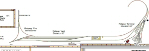

Ridgway Colorado - 1941
Ridgway was the northern terminal of the Rio Grande Southern Railroad. Ridgway was home to the main terminal of the RGS. The terminal in Ridgway originally consisted of a 5 stall roundhouse, 50,000 gallon wooden water tank and 50-foot turntable. After a disastrous fire in 1906, the facilities had to be re-built. The new facilities included a new 5 stall roundhouse that would later have 2 more stalls added to accommodate the fabled Galloping Geese. The turntable was re-built to accommodate the heavier K-27 locomotives in use and a Wye was constructed to turn these locomotives. The new terminal also included a new machine shop and brick office building to be used as RGS headquarters. The coaling facilities required men with strong backs as the coal wharf in use required all coal be shoveled into the waiting tender. A sand storage bin and drying house rounded out the new construction.
My 1:64 scale model or Ridgway has all the bells and whistles. The yard itself is over 30 feet long! At this point the Yard tracks are in, the handsome Victorian depot in open for business, and locomotives can turn on the wye north of town. The large round house waits in a box on my shelf of future projects as does the sand house. The water tank is ready to go complete with roof intact as it was on June 30th, 1941. Who knew a short week later the tank would lose its roof to an electrical fire.

